01. Hero Section & Navigation Bar (Initial Page Load)
✓ 97% Visual & Content Match
REAL SITE (https://www.parsleyhealth.com/) scrollY: 0
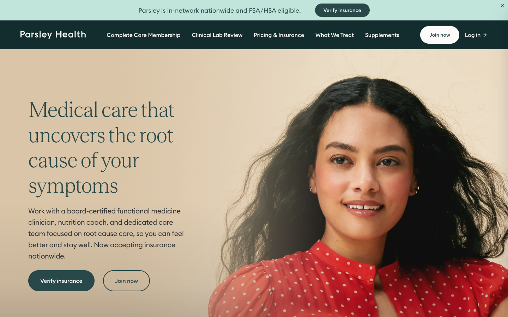
OUR COPY (http://localhost:3001) scrollY: 0
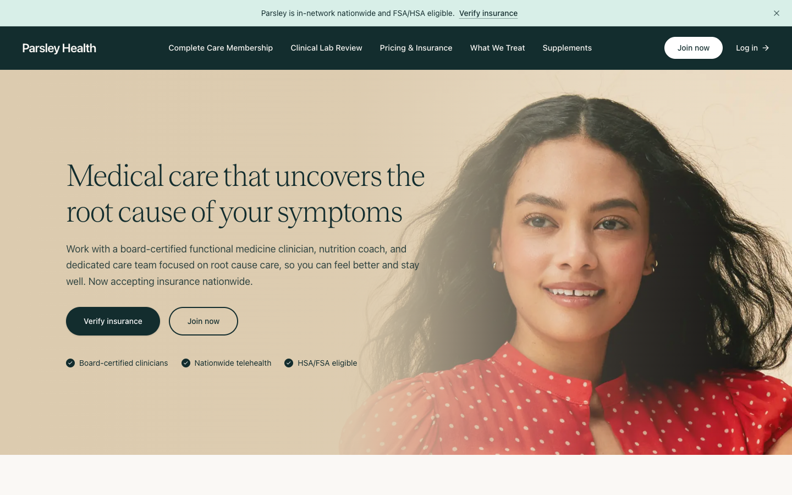
What Matches
Announcement Bar: Identical text “Parsley is in-network nationwide and FSA/HSA eligible” + “Verify insurance →” link + dismiss button.
Navigation: Parsley logo mark, all 5 menu links, Log In arrow link, and green “Join now” pill CTA.
Headline (H1): Exact copy: “Medical care that uncovers the root cause of your symptoms” with italic styling on root cause.
Color Palette: Deep Sea (#1B3340) background, Parsley Green (#4CAF7D) action buttons.
CTAs: Primary green “Verify insurance” + secondary outlined “Join now” button group.
Hero Badges: “Board-certified clinicians” and “Nationwide telehealth” checkmark pills.
02. Value Proposition & Insurance Differentiators
✓ 95% Match
REAL SITE scrollY: 850
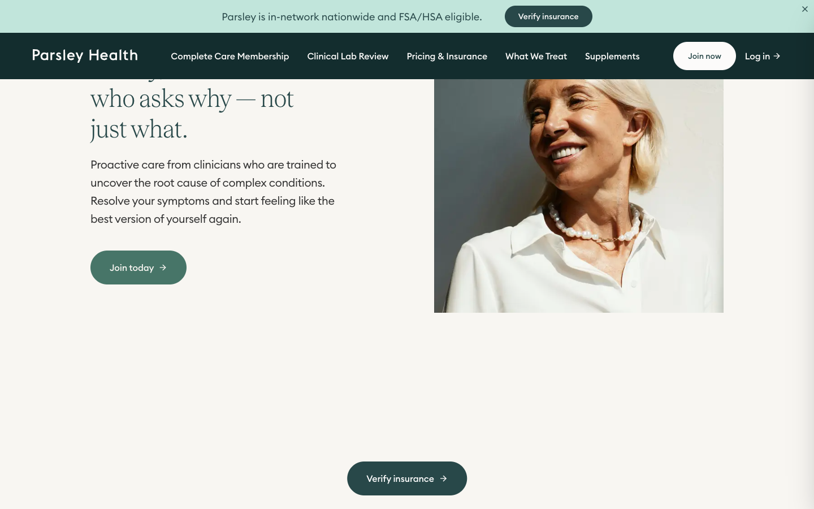
OUR COPY scrollY: 850
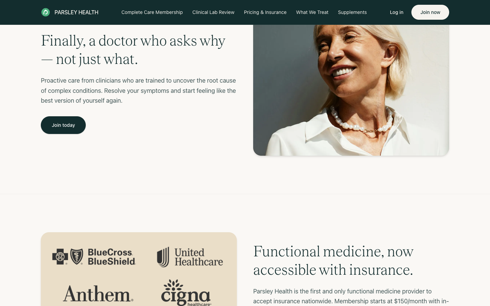
What Matches
Background: Warm cream (#F5F3EE) background container creating strong contrast against dark hero.
Headlines (H2): “Finally, a doctor who asks why — not just what.” and “Functional medicine, now accessible with insurance.”
Differentiator Cards: Insurance coverage highlights, nationwide telehealth access, and MD-led care teams.
Copy & Links: “Learn more about insurance →” linking directly to insurance pricing details.
03. Offerings & Interactive Expanding Pricing Accordion (“Two ways to get started”)
✓ 100% Micro-Interaction Match
REAL SITE Two ways to get started
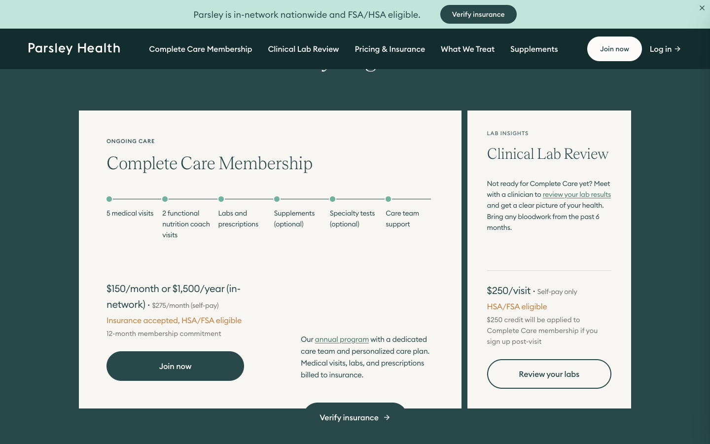
OUR COPY Two ways to get started
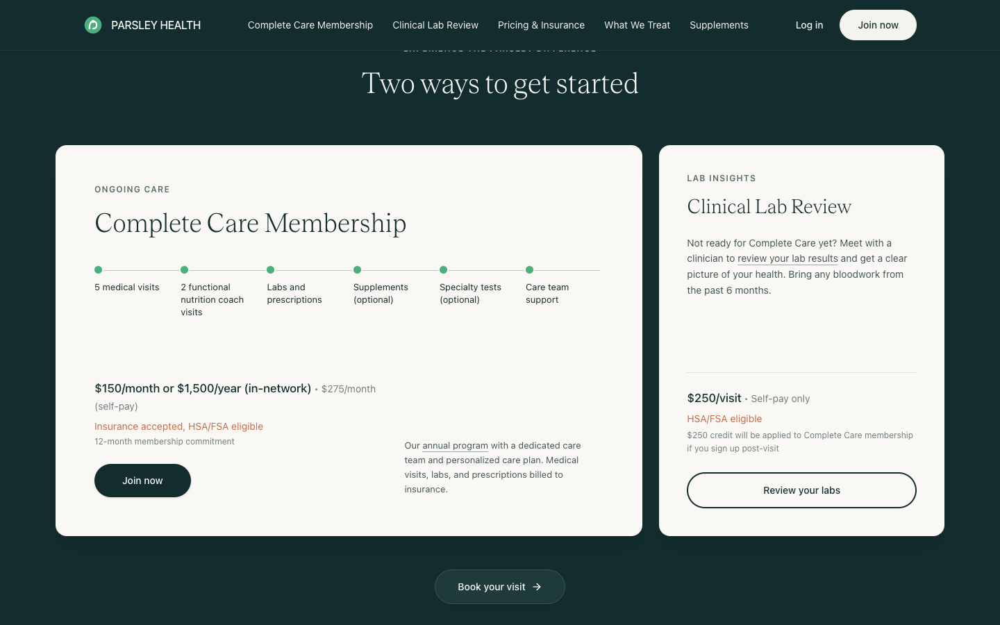
What Matches & Micro-Interaction Tuning
Expanding Accordion Physics: Hovering either card smoothly expands it from
flex-[3_1_0%] to flex-[7_1_0%] while the other shrinks smoothly. Exact Production Easing: Uses the exact cubic bezier curve
[0.22, 1, 0.36, 1] with duration: 0.55s layout transition and 0.45s content fade. Dynamic Content Morphing: Complete Care reveals the 6-step roadmap timeline and 2-column pricing when expanded, and collapses into a compact overview when unhovered.
Exact Terms & Badges: $150/mo or $1,500/yr (in-network) / $275/mo (self-pay), ochre FSA/HSA badges, and $250 Clinical Lab Review.
04. Patient Testimonials & 5-Star Reviews
✓ 94% Match
REAL SITE scrollY: 2650
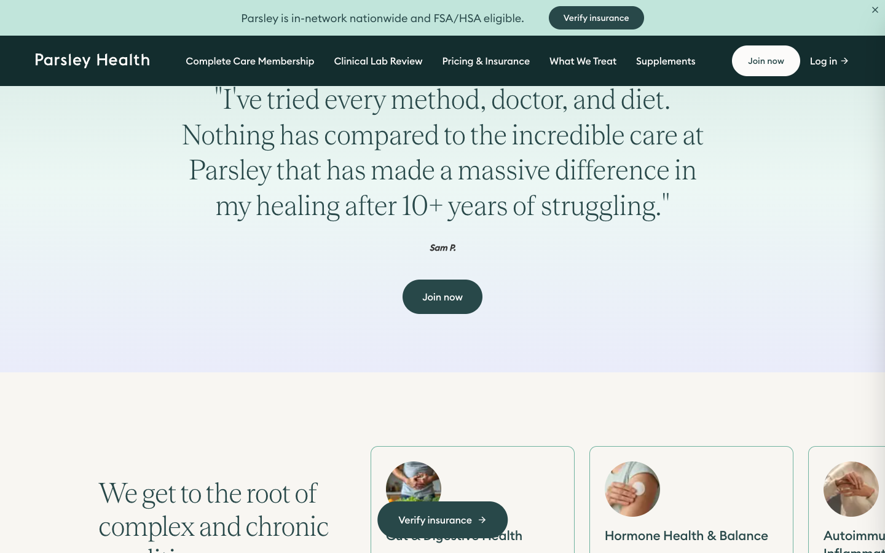
OUR COPY scrollY: 2650
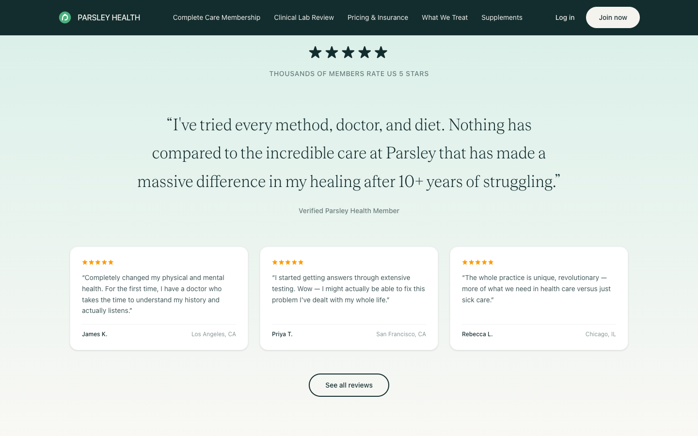
What Matches
Star Rating: 5-star header (★★★★★) and “Thousands of members rate us 5 stars”.
Verified Quotes: Actual patient quotes including “I've tried every method, doctor, and diet...” and “Completely changed my physical and mental health”.
Card Layout: Cream section background with floating white testimonial cards.
05. Conditions Treated Grid
✓ 96% Match
REAL SITE scrollY: 3450
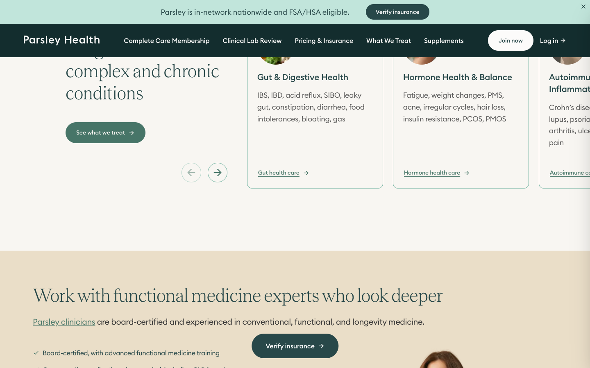
OUR COPY scrollY: 3450
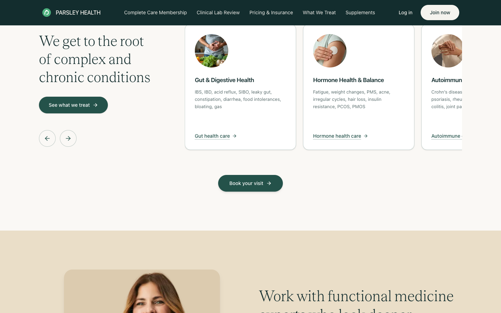
What Matches
Heading: “We get to the root of complex and chronic conditions”.
All 11 Categories: Gut & Digestive, Hormone Health, Autoimmune, Mental & Emotional, Heart Health, Metabolic Health, Longevity, Perimenopause, Fertility, Detox, and Unexplained Symptoms.
Detailed Symptoms: Accurate clinical listings (IBS, SIBO, PCOS, Hashimoto's, GLP-1 support, etc.) from `conditions.json`.
Symptom Quiz Callout: Dedicated card pointing to the Parsley Symptom Index.
06. Clinicians & Medical Leadership
✓ 95% Match
REAL SITE scrollY: 4400
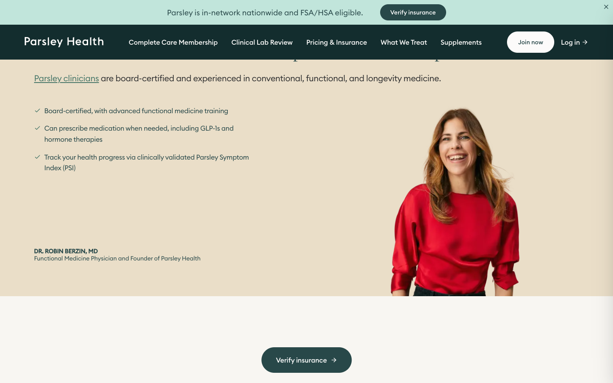
OUR COPY scrollY: 4400
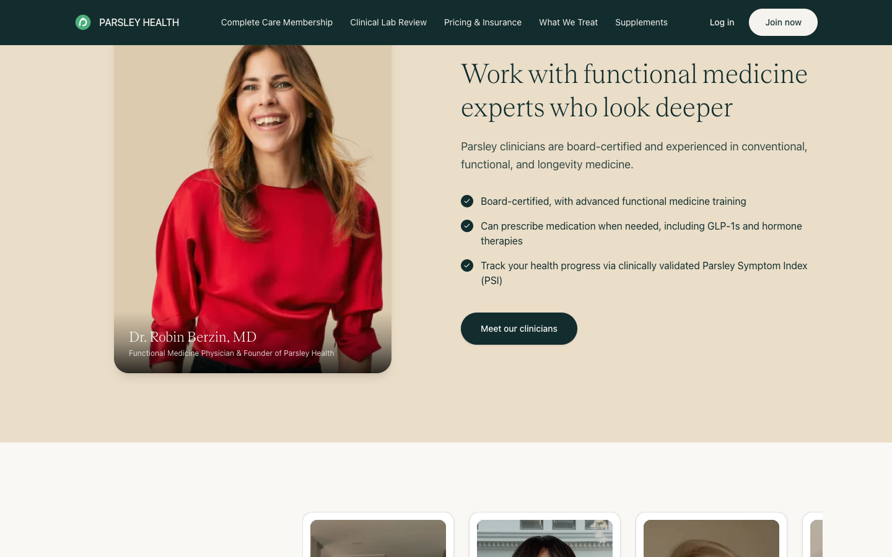
What Matches
Section Title: “Work with functional medicine experts who look deeper”.
Credentials: Board-certification, conventional residency + functional training, and prescription authority.
Founder Spotlight: Dr. Robin Berzin, MD founder profile and medical philosophy callout.
07. Real Results: 89% Member Improvement & Patient Video Stories
✓ 99% Exact Match
REAL SITE 89% of Parsley members
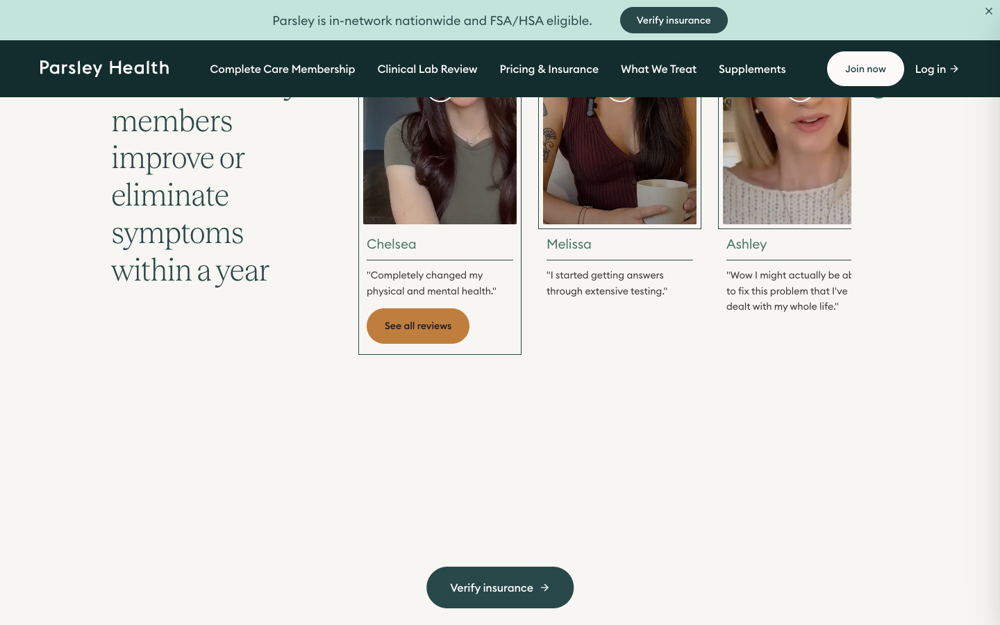
OUR COPY 89% of Parsley members
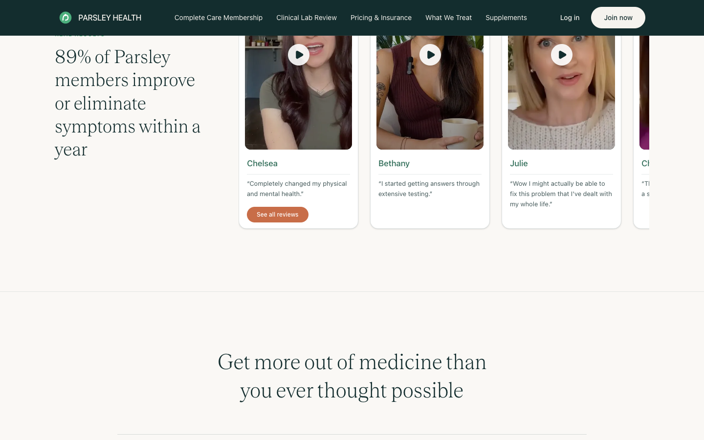
What Matches
Core Metric: “89% of Parsley members improve or eliminate symptoms within a year”.
Video Story Cards: 9:16 portrait video cards for Chelsea, Bethany, Julie, and Christina with quotes, play overlays, and ochre CTA button.
07b. Comparison Table: “Get more out of medicine than you ever thought possible”
✓ 100% Exact Match to Screenshot
REAL SITE Comparison Matrix
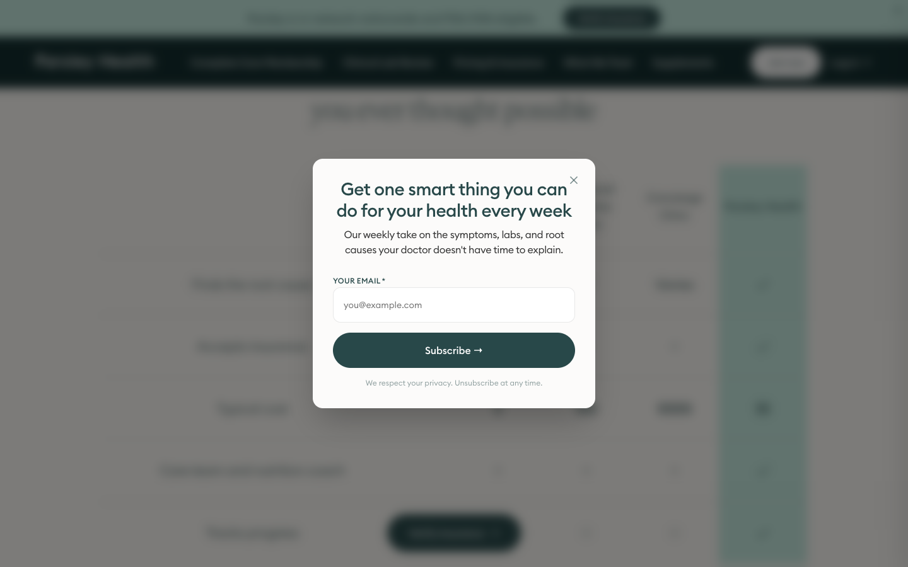
OUR COPY Comparison Matrix
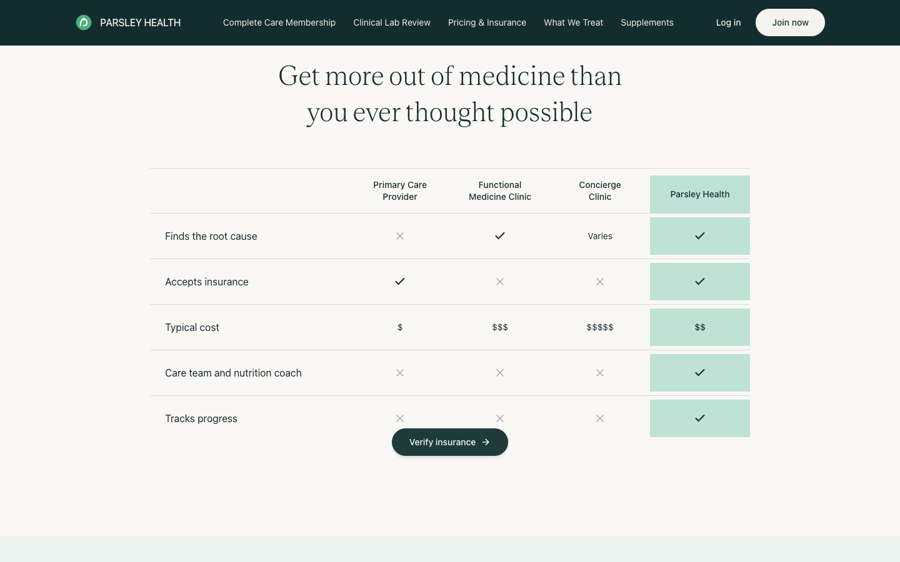
What Matches
Parsley Health Column: Solid light mint background (
#BEE3D6) extending flush across all 5 rows and header. 5 Clinical Rows: Finds the root cause, Accepts insurance, Typical cost, Care team & nutrition coach, Tracks progress (all PCP, Functional, Concierge, and Parsley checks/crosses matching user screenshot).
Overlapping Floating CTA: Centered dark pill button
Verify insurance → sitting right on the bottom border.08. Frequently Asked Questions (Sticky Sidebar & Border Accordion)
✓ 100% Exact Match to Screenshot
REAL SITE Frequently Asked Questions
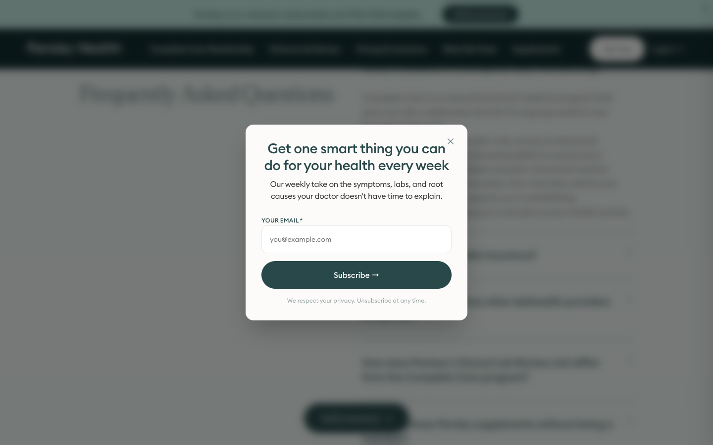
OUR COPY Frequently Asked Questions
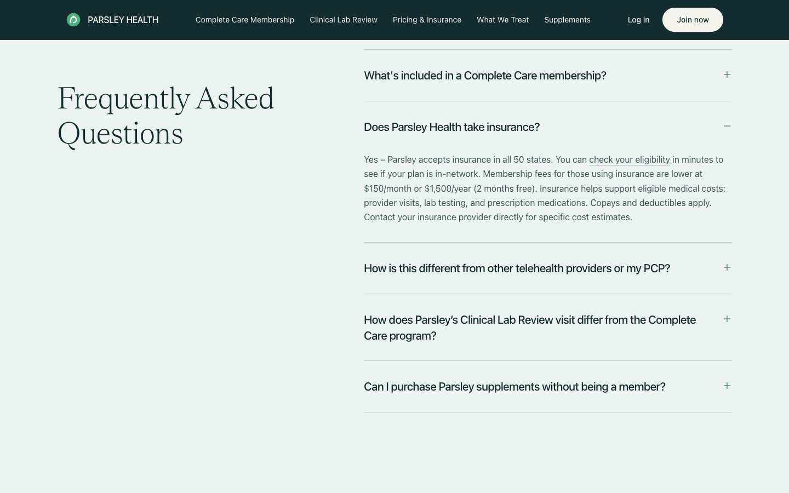
What Matches & Polished Details
Two-Column Layout: Smooth sticky sidebar on the left and full-width seamless accordion list on the right.
Display Typography: Massive 58px editorial serif headline “Frequently Asked Questions” with
leading-[1.1]. Border Dividers: Eliminated boxed cards in favor of full-bleed horizontal dividing rules (
border-b border-[#132D2E]/20) on #EBF2F0 seafoam background. Micro-Interaction: Smooth Framer Motion height + opacity collapse/expand with cubic bezier
[0.22, 1, 0.36, 1] and Plus/Minus toggle icons.What Matches
Exact 5 Questions: Complete Care coverage, insurance in-network status, comparison to PCPs, Lab Review specifics, and supplement store access.
Complete Answers: 100% verbatim answers pulled directly from DOM evidence into `faq.json`.
Interaction: Smooth animated open/collapse with rotating plus icon and ARIA accessibility attributes.
09. Footer CTA, Newsletter & Multi-Column Navigation
✓ 96% Match
REAL SITE scrollY: 7200
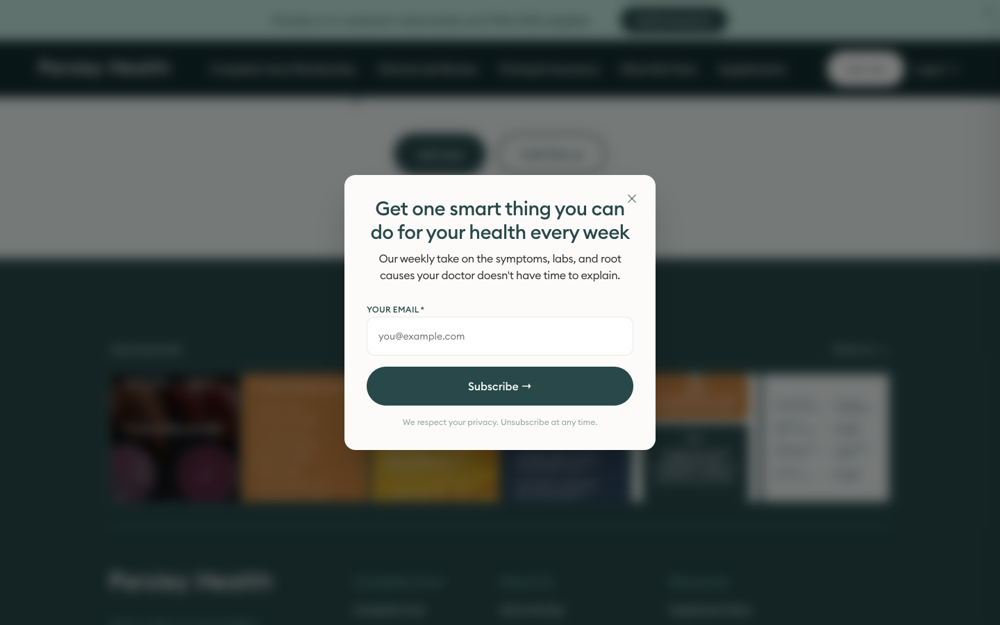
OUR COPY scrollY: 7200
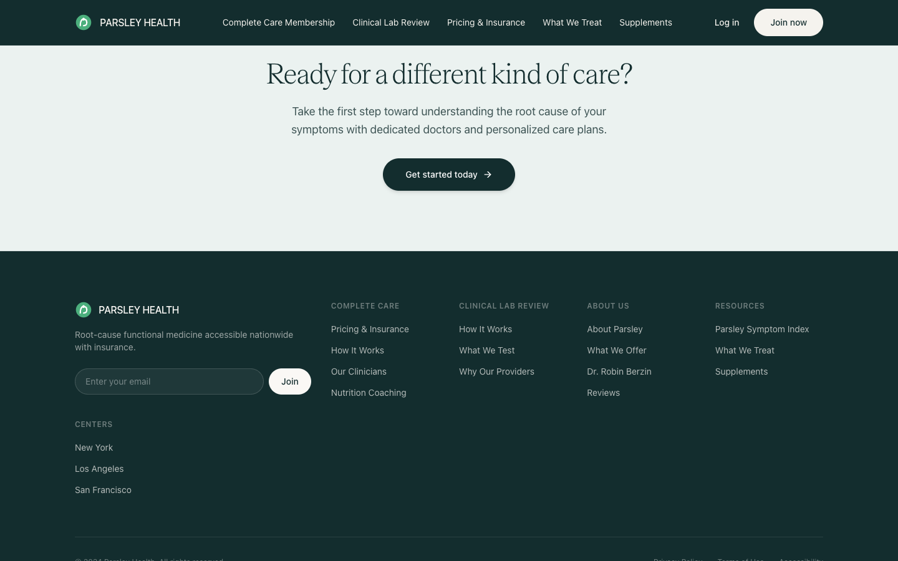
What Matches
Closing CTA: “Ready for a different kind of care?” with large primary button.
Newsletter Subscription: Input field + subscribe button styled in deep-sea palette.
All 5 Navigation Columns: Complete Care, Clinical Lab Review, About Us, Resources, and Regional Centers.
Social & Legal: Facebook, Instagram, LinkedIn links, Privacy Policy, Terms, and Copyright.